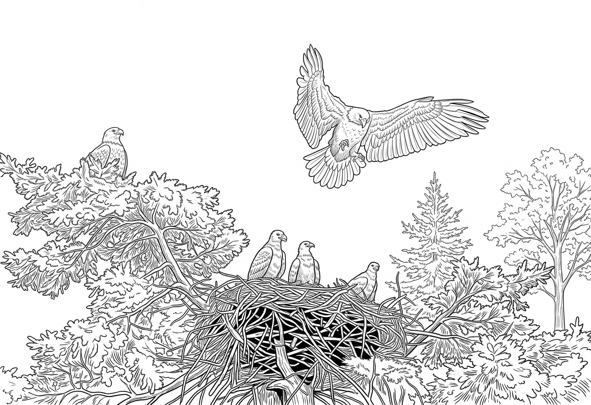
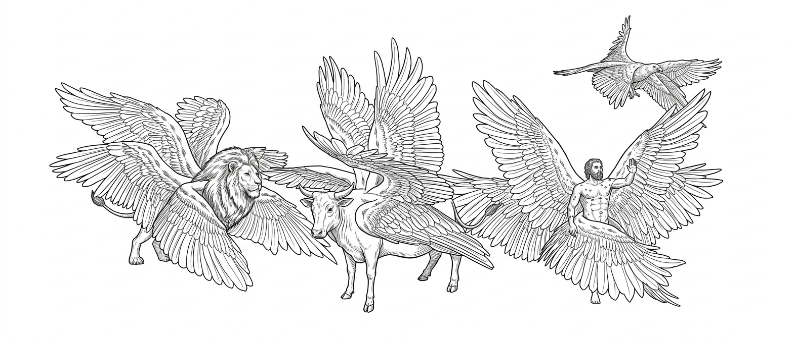
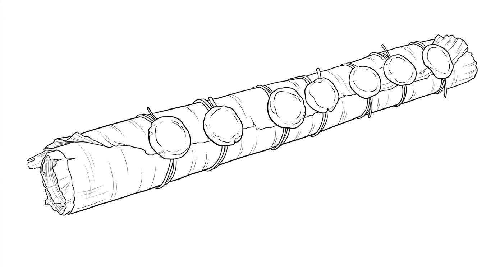
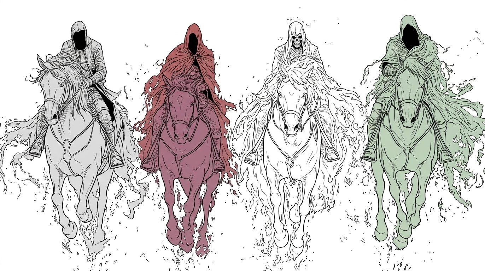

CHAPTER 12 OF 12
The Throne in Heaven

Shrubs growing from the cracks in the cliffs clothed the mountainside in everlasting green. The setting sun painted the sheer rock faces with shades of orange and gold.
Today, I circled high above the cliffs. Many young eagles were practicing their dives and learning how to catch fish.
They reminded me of myself. I remembered how my golden eagle teacher had trained me when I was young.
A young eagle came to rest beside me. It had been trying all day. I talked with it and taught it to watch carefully where the fish were swimming, to wait for the right moment, and then to dive from high above and seize the fish. At first, it was reluctant. But it still tried the way I had taught it.
Later, it caught a fish. The success filled it with joy.
Then I continued teaching it about spiritual vision.
“When you look at the world, first look up at the sun. Follow the light as you look at everything before you. Do not look only at what your eyes can see. Learn also to discern the good and the evil that the light reveals.”
I spoke at length because these were things I had learned myself.
The young eagle listened, and then told the other eagles what I had taught it. Before long, several young eagles came to me and asked me to teach them. So I flew with them. We learned together how to see.
Spiritual vision is taught one eagle at a time, just as my golden eagle teacher had trained me. I remembered how he endured all my complaints, and how he encouraged me whenever I failed again and again.

I saw that my Master Jesus did the same thing on earth. He chose His disciples and trained them one by one. He was often with them. Although His disciples respected Him deeply, some of them had tempers, and sometimes they argued with one another. I saw that Jesus did not stay with them only when they did well. He walked with them and taught them along the way. Sometimes He rebuked them. Sometimes He patiently answered their questions. Sometimes He said nothing at all, but simply let them watch what He did. Little by little, He changed them.
I wanted to remain with these young eagles forever. My heart was glad, and my spirit rejoiced. I wanted to stay in this sky and watch these young eagles learn to fly. I praised my Master. I said:
“Glory, glory, glory!”
My eyes have seen You. I fix my gaze upon You. My heart belongs to You alone.
I looked toward the sun. A company of golden eagles came flying toward us from the direction of the light. It was my golden eagle teacher and my companions. Behind them flew two angels. They had once sent me to carry Stephen, who had been stoned to death, to the throne in heaven. I remembered how exhausted I had been after that flight. Yet when Stephen arrived safely before the throne, I realized how small my own effort had been.
This time, I heard the angels call to me:
“Come. Your next task is waiting.”
They told me what I was to do.
On this journey, I flew with many golden eagles and angels of heaven. We climbed higher and higher until the mountains of the earth slowly disappeared beneath the clouds. As we drew near the glassy sea of heaven, I heard loud thunder and awesome rumblings. I also heard the songs of worship. I did not know what would happen next.
I saw a vast sea of glass, clear as crystal. The throne was surrounded by a rainbow resembling an emerald, flashing with lightning and echoing with thunder. Around the throne stood figures dressed in white, with golden crowns upon their heads. I counted them. There were twenty-four elders.
Around the throne were four great living creatures. They worshiped the eternal Creator before the throne and led the worship of heaven. They moved with wings. The first was like a lion. The second was like an ox. The third had a face like a man. The fourth was like a flying eagle. Each had six wings. Day and night they never stopped crying out, in perfect harmony:
“Holy, holy, holy,
Lord God Almighty,
who was, and is, and is to come!”

Their voices grew louder until they filled all of heaven.
Whenever they gave glory, honor, and thanks to the King upon the throne, the twenty-four elders fell down before the Creator.
They laid their crowns before the throne and said:
“Our Lord and our God,
You are worthy to receive glory, honor, and power,
for You created all things,
and by Your will they were created\ and have their being.”
In heaven, I heard the angels passing a message from one to another. The whole sky became solemn. They were preparing for something. No one explained it directly to me. But in the voices moving through heaven, I heard it:
The judgment of the whole earth was about to begin.
I remembered when my Master Jesus was still on earth. He had told the people that the kingdom of heaven was near and that they should repent. He had also warned them that one day judgment would come.
Was this that day?
Once, I had flown above the crowds while He spoke. Some heard His words but refused to turn back. Some even hated Him. I could not understand why people would reject a Master who loved them so deeply. Now I understood. The day He had spoken about had come. All of us golden eagles stopped beating our wings and hovered above the glassy sea.
The Creator seated upon the throne was surrounded by glorious light. In His hand was a scroll. I heard a mighty angel proclaim with a loud voice:
“Who is worthy to open the scroll?”
I heard someone weeping. It was John. I had seen him before—the John who had followed my Master Jesus. He saw that no creature in heaven or on earth was worthy to open the scroll, and he wept bitterly. Then one of the elders said to him:
“Do not weep. Behold, the Lion of the tribe of Judah, the Root of David, has conquered. He is worthy to open the scroll and to break its seven seals.”
Little by little, I began to understand. The scroll contained God's judgment upon the world. Once it was opened, and the seven seals were broken one by one, terrible things would unfold upon the earth.

Then I saw my Lord Jesus come before the throne. He looked like a Lamb who had been slain. I knew Him.
It was my Master Jesus. I remembered the day He was crucified. I had cried that day. I had asked my Master:
“They have treated You with such cruelty. Why do You say nothing?”
Now He came forward and took the scroll from the right hand of the One seated upon the throne. At that moment, the twenty-four elders fell down together and began to sing a new song:
“You are worthy to take the scroll
and to open its seals,
for You were slain,
and with Your blood You purchased people for God
from every tribe and language and people and nation.
You have made them a kingdom and priests to our God,
and they shall reign upon the earth.”
When the elders had finished singing, countless angels surrounded the throne, the living creatures, and the elders.
They sang:
“Worthy is the Lamb who was slain,
to receive power and riches and wisdom and strength,
honor and glory and praise!”
Then I heard praise rising from heaven and earth, from beneath the earth and from the sea—from every creature in all creation. Birds filled the sky with their cries. The waters were alive with their voices. The earth itself seemed to answer with the sounds of countless creatures. Their voices intertwined and rose into a magnificent harmony throughout heaven. They said:
“To Him who sits upon the throne
and to the Lamb
be praise and honor and glory and power,
forever and ever!”
I looked up at the Lamb. He held the scroll. I knew that next He would break the first seal.
I saw the judgment of God unfold one seal at a time. The Lamb opened the first four seals. Each time a seal was broken, one of the four living creatures called out with a mighty voice:
“Come!”

Then I saw four riders appear, one after another. A white horse. A red horse. A black horse. A pale horse. They went out across the earth. War, famine, and death followed them.
The fifth seal was opened. I heard the cries of those who had been killed because they had borne witness to the word of God. They cried out from beneath the altar:
“Sovereign Lord, holy and true,
how long before You judge those
who dwell on the earth
and avenge our blood?”
I heard their voices. They were people who had once borne witness to my Master. Now they were dead. They had not forgotten God. They had not denied His name. Now they cried out before Him for justice. I saw each of them receive a white robe. A voice told them to rest a little longer, until the number of their fellow servants and brothers and sisters who would also be killed, as they had been, was complete.
Then the sixth seal was opened. The stars of heaven fell to the earth, one after another, like figs falling from a fig tree shaken violently by a great wind. Mountains and islands were moved from their places. An earthquake came upon the earth. No one had ever seen such a terrible disaster. I saw the kings of the earth crying out:
“Fall on us!
Hide us from the face of the One
seated on the throne
and from the wrath of the Lamb!”
I saw them running in panic, searching for places to hide. Some fell to the ground. Some curled themselves behind the rocks, their eyes filled with terror. But there was no corner that could hide them. No mountain could cover them.
In heaven, I saw the people who had been redeemed. They came from every nation, tribe, people, and language. They stood before the throne and before the Lamb, clothed in white robes, holding palm branches in their hands.
They sang a song that no other creature could sing. It was the song of those who had known tears, who had passed through death, and who had been redeemed by the Lamb. One by one, generation after generation, they had been redeemed by Him. Their song softened the sorrow of heaven and earth. Their voices sang of the joy of redemption. They cried out:
“Salvation belongs to our God
who sits upon the throne,
and to the Lamb!”
I remembered something the apostle John had once said: If everything Jesus had done were written down one by one, the whole world could not contain the books that would be written. Now, as I looked upon all these people redeemed by the Lamb, I suddenly understood. How much more was there than all the things Jesus had done while He walked upon the earth? Every redeemed person had a story. I looked at them and remembered the people I had seen weeping on the earth. Some of their tears I had watched from high above. Some of their suffering I could only watch from a distance. But now, before the throne, I saw the truth: Not one tear had been forgotten.
Then the seventh seal was opened. Silence fell over heaven. It was like the pause between two notes of music. Everyone held their breath.
Then, suddenly, the trumpets sounded. Seven angels blew seven trumpets. Each trumpet released another great and terrible judgment upon the earth.
I saw the earth tremble. I saw fire and smoke rising. I saw people fleeing in terror. How I longed for them to turn back.
“Repent! Repent! There is still time!”
I cried out from the sky. But I saw that they still refused to repent. The rest of mankind, those who had not been killed by these plagues, still would not repent. Instead, they clenched their fists and cursed the God of heaven.
I also saw people stealing. Some broke into their neighbors' homes and took what they had stored away. The disasters came. The earth shook. People knew that judgment had arrived. And yet they still clung tightly to their idols and possessions. They still refused to turn back. I wept in the sky. Why? You have seen all these things. Why will you still not return to the Lord who created you?
Then it was my turn to speak. When the fourth angel sounded his trumpet, I knew my moment had come. I cried out across the heavens:
“Woe! Woe! Woe
to those who dwell on the earth,
for the remaining three angels
are about to sound their trumpets!”
I continued flying through the sky. Then I saw three angels flying above the earth. One of them was proclaiming the eternal gospel to every nation, tribe, language, and people. I understood then that even after judgment had begun, the call of the gospel had not ceased. I heard his voice:
“Fear God and give Him glory,
because the hour of His judgment has come.
Worship Him who made heaven and earth,
the sea and the springs of water.”
I understood. Before the final judgment came, God was still calling people to repent.
I know that you humans wrote these things down in a book called the Bible. It also records many things I never saw with my own eyes. Later, I saw tyrants throughout the generations try to burn the Bible and erase it from the earth. But instead, it spread from generation to generation. People tried to extinguish the words of my Master. But the light of those words only shone farther across the earth.
That book records the Creator. It also records His plan to save humanity. And we eagles are part of that story.
I once thought that all I could see was the sky, the mountains, the rivers, and the earth. Then I saw Jesus. I saw Him walking among people. I saw Him suffer. I saw Him nailed to the cross. I saw Him rise from the dead. I carried Stephen into heaven. And now I fly once more before the throne. I have seen the Lamb open the scroll. I have seen all creation bow before Him in worship. The glory I have seen is my Master.
“I tell you, if they keep silent,\ the stones will cry out.”
The End
🌟 Finished this chapter?
Log in to the Reading Quest and answer three questions about "The Throne in Heaven" to earn stars and points!
Take the Chapter 12 Quiz